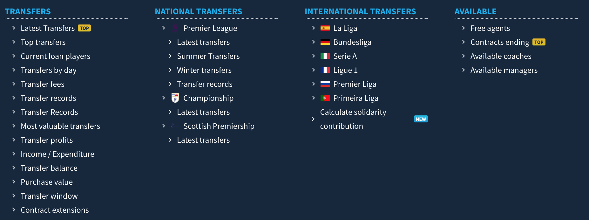
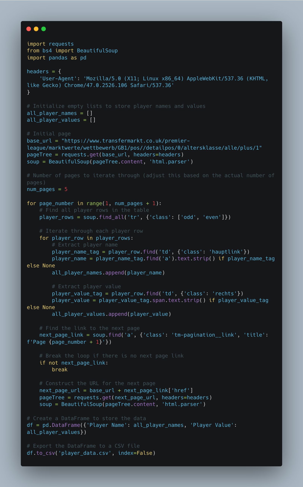
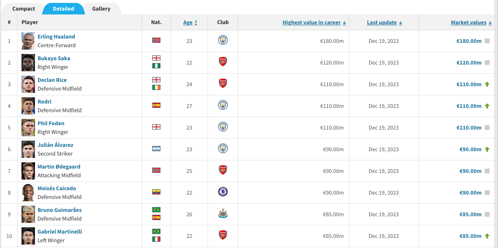
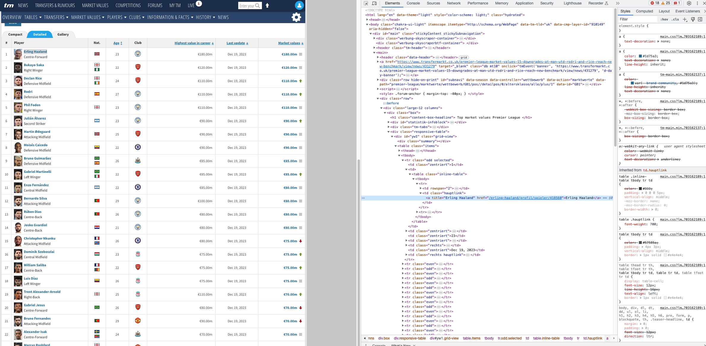
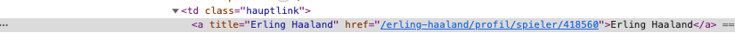
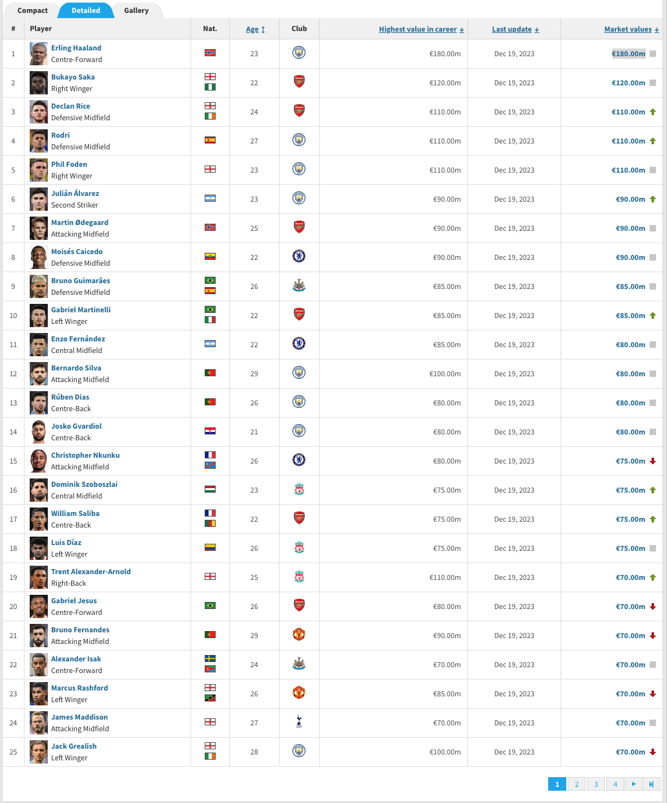
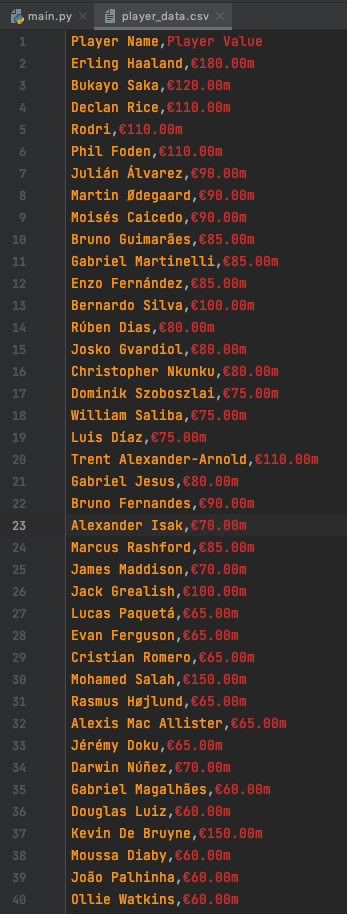

Intro To Transfermarkt (Python)
Hi All,
Welcome back,
I hope everyone has had a lovely festive period and closed out 2023 in style. Looking ahead to 2024 I am excited to share more with the community, this may be through a variety of different channels compared to previous, but we will see how things play out.
Last year I really found good flow to the tutorial content normally posting live on a Monday morning - and hit a milestone of a blog a week on average! It was great to see the site grow in views a further 33% YoY - excited people haven't got fed up yet of the efforts.
Anyway, wishing everyone all the best. Let's dive into some content.
Many sports fans will already be aware of transfermarkt and its existence. It is a wonderful resource to use when looking at... well transfers.
It holds everything from rumours, fees, to contracts that are ending soon amongst a whole variety of clubs. It's not just popular amongst your twitter footy fans but also a lot of clubs and sports companies / agencies.
Today we will take a first peak at how we can start to extract some of that information through python.
This will be for those who are really just starting out their journey, but will look to build upon it in future weeks.
The code can be found in the repository through the github link at the top of the page.

What does the script do?
This Python script is a web scraper that extracts information about player names and their corresponding values from the Transfermarkt website, specifically focusing on the Premier League. The script utilizes the requests library to send HTTP requests and the BeautifulSoup library to parse and navigate HTML content. The extracted data is then organised into a pandas DataFrame and exported to a CSV file.

Let's take a step by step look...
- First we import the necessary libraries.
2. Then we set the user agent headers up. These headers are used to mimic a web browser when making requests. Some websites may block requests without a proper user-agent.
3. I create empty lists because I know I want to end up adding the players names and current value to the list.
4. The base url is the easy bit... just copy and paste the page you are on. You will see for this tutorial we are looking at premier league players.
5. The page tree and soup send a request to the initial page and parse the content.
What do we mean by parse the content?
Well, right click on a web page and go to inspect.

You will see the different tagging available in the web page. Notice the highlighted title of Erling Haaland. Essentially we have to navigate through these different trees to find the different attributes we want.
This is what the following parts are doing
player_name_tag = player_row.find('td', {'class': 'hauptlink'})

player_value_tag = player_row.find('td', {'class': 'rechts'})
**One thing to note here is i am taking the highest value the player has reached instead of the current market value.**
Sometimes we will have to do some additional search or cleansing depending on how the page is structured.
So generally thats how we retrieved specific players details.
The For loop will help us iterate over all the different players on the page.
But what if we want the full 100 players, and their highest value they have reached in their career?

Well normally you'd think that the url changes.
In this case it's actually the bottom banner that controls the view on the page. (1,2,3,4..)
So we actually want a way to click through these buttons, thats why we have added in a for loop containing that page, as well as the signal to locate the number box to action the page clicks.
next_page_link = soup.find('a', {'class': 'tm-pagination__link', 'title': f'Page {page_number + 1}'})
if not next_page_link:
break
next_page_url = base_url + next_page_link['href']
pageTree = requests.get(next_page_url, headers=headers)
soup = BeautifulSoup(pageTree.content, 'html.parser')
The script writes the player information to a CSV file named 'player_data.csv' in the current working directory.

You can find a copy of what this output looks like in the GitHub repo.
Now that I've given you the power to, It's time to add the disclaimer:
Keep in mind that web scraping might be subject to the terms of service of a website, and scraping too aggressively may lead to IP bans or other restrictions. Always make sure you comply with the website's policies and use web scraping responsibly.
Going Further:
- Why not try and find the market value of top players in a different league?
- Try and add additional information in, such as country, age or club.
- Create a chart to show the difference between player market price.
As always, Let me know how you get on with this one. I can be reached on Twitter, @_CJMayes.
LOGGING OFF,
CJ